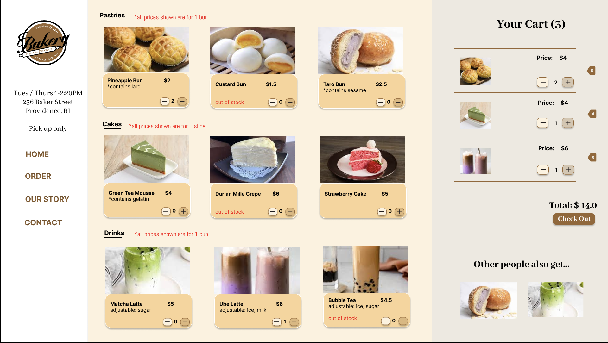
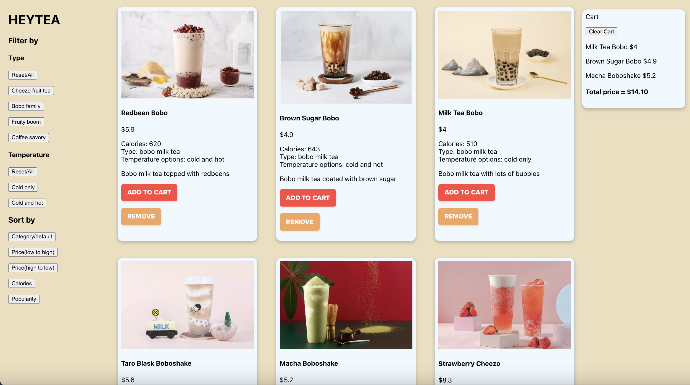

1. Introduction
In this project, I’ll create a web interactive interface with React
for a bubble tea cafe. On the webpage, you can view and order various Heytea drinks.
This interface includes the following:
- A list of 15 items for drinks displayed as components, including a picture and various info
- Filtering functions that allow users to filter drinks by type (fruit tea, milk tea, juice, coffee) and temperature (cold, cold and hot)
- Sorting functions that allow users to sort drinks by type, price(low-high, high-low), calories, and popularity
- An aggregator that allows users to add and remove items from the Cart, and calculate the total price of items in the Cart
Click to start order: Heytea
2. Goal and Value of the Application
Heytea: Heytea is a popular Chinese tea drink chain featuring cheezo fruit tea. The brand is famous for its modern interior design, photogenic packaging, and innovative drinks and is well-known for its popularity on social media.
Goal: This web interface allows users to view and navigate Heytea’s complicated menus with filtering and sorting functions. Also, it allows users to order drinks by adding drinks to the Cart and removing items while seeing the total price before check-out.
Value: : As bubble tea and tea shops become increasingly popular, there is also an increasing demand for ordering drinks online for pickup or delivery. This web interface is thus valuable in exploring various functionalities and optimizing user experiences of ordering drinks online.
3. Usability Principles and Prototyping
Learnability and memorability: The app is very learnable and intuitive to use. All the interactive components are buttons, which tell the users that they are clickable. Also, the buttons are clearly labeled. Users can follow from left to right visually to add filter/sort criteria, view items, and view the cart and total price. The visual path and navigation are sequential, which corresponds to the steps users look at menus and order drinks. on social media.
Efficiency: The app is efficient as it keeps the nav bar, the drink items, and the cart on a single page. The navigation bar and the cart are fixed on the side and the top, which allow users to scroll down to view the menu and add items to the cart while being able to use the filter and sort functions and view the cart anytime.
Prototyping and design decision: I re-use the design from a previous prototype I created for ordering a bakery. It was proven more effective in the previous A/B testing, so I kept the layout and design. The prototype is given below. I merely changed the navigation bar on the left to put the filtering and sorting buttons. I also included more information on the items while making “ADD TO CART” and “REMOVE” buttons to add and remove items in the Cart.

prototype

actual page
4. Organization of Components
App-js: contains the product list (read from a complete list of product information in a JSON file) and passes it to the FilteredList component.
Filteredlists-js: contains filtering/sorting/aggregator methods. It contains the following props and states property:
- Props. list: the product list passed from App
- [state, setState]: a use state that tracks the type of drink selected for filtering drinks by types( cheezo fruit tea, bobo family, fruity boom, and coffee savory). The default is “All,” which includes all types of drinks
- [res, setRes]:a use state that tracks the temperature options of the drink selected for filtering drinks by types (cold, cold and hot). The default is “All,” which includes all temperature options
- [sort, setSort]: a use state that tracks the criteria for sorting (category, price, calories, and popularity). The default is “category,” which sorts the items by their types
- [cart, setCart]: a use state that tracks the items in the cart as an array. The default is empty, and thus an empty array
- [totalprice, setTotalPrice]: a use that tracks the total price of items in the cart. The default is “0”
- [checked, setChecked]: a use state that tracks if a button is selected to allow the users to select and de-select
Displaylist-js: maps each product from App.js to an HTML Component for render. It contains the following props properties:
- Props.list: a list of sorted and filtered items from Filteredlist.js
- Props.addToCart: function passed from Filteredlist.js that updates the cart with items and total price when an item is added to the cart
- Props.removeCart:function passed from Filteredlist.js that updates the cart with items and total price when an item is removed from the cart
Aggregator-js: maps each product in the cart from App.js to an HTML Component for rendering, including item names and prices and their total price. There’s also a button for resetting the cart. It contains the following props properties:
- Props.cartList: a list of items in the cart passed from Filteredlist.js
- Props.totalprice: a number passed from Filteredlist.js that tells the total price of items in the cart
- Props.clearCart: function passed from Filteredlist.js
5. Users Interaction and Instructions
Click to start order: Heytea
To filter and sort items: click the buttons in the navigation bar on the left to select and click again to de-select. Press “reset/all” for reset
To add and remove items in the cart: click “ADD TO CART” to add the item to the cart and “REMOVE” to remove the item
Filteredlists-js: refer to the cart on the right side of the webpage, and the aggregator will automatically calculate the total price